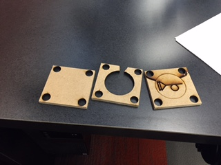

This week we had to create a mill for pouring pewter with either the CNC milling machine or the laser cutter. I chose to use the laser cutter. The mold has to have a negative for the real image, air holes, a entrance for pouring pewter, and four holes on the vertices for pins to pin down.
